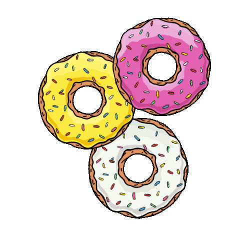

Congratulations! You have won a secret promo code for 10% in the WOLT delivery app. Order your favorite food!
Click on these delicious donuts to receive the promo code.

SECRET_RECIPE
Scrambled Eggs (10 minutes)

A simple and delicious breakfast dish made with eggs, butter, and seasoning.
- Lightly whisk 2 large eggs, 6 tbsp single cream or full cream milk and a pinch of salt together until the mixture has just one consistency.
- Heat a small non-stick frying pan for a minute or so, then add a knob of butter and let it melt. Don’t allow the butter to brown or it will discolour the eggs.
- Pour in the egg mixture and let it sit, without stirring, for 20 seconds. Stir with a wooden spoon, lifting and folding it over from the bottom of the pan.
- Let it sit for another 10 seconds then stir and fold again.
- Repeat until the eggs are softly set and slightly runny in places. Remove from the heat and leave for a moment to finish cooking.
- Give a final stir and serve the velvety scramble without delay.
Pancakes (20 minutes)

American pancakes topped with maple syrup and fresh berries.
- Mix 200g self-raising flour, 1 ½ tsp baking powder, 1 tbsp golden caster sugar and a pinch of salt together in a large bowl.
- Create a well in the centre with the back of your spoon then add 3 large eggs, 25g melted butter and 200ml milk.
- Whisk together either with a balloon whisk or electric hand beaters until smooth then pour into a jug.
- Heat a small knob of butter and 1 tsp of oil in a large, non-stick frying pan over a medium heat. When butter looks frothy, pour in rounds of the batter, approximately 8cm wide. Make sure you don’t put the pancakes too close together as they will spread during cooking. Cook the pancakes on one side for about 1-2 mins or until lots of tiny bubbles start to appear and pop on the surface. Flip the pancakes over and cook for a further minute on the other side. Repeat until all the batter is used up.
- Serve your pancakes stacked up on a plate with a drizzle of maple syrup and any of your favourite toppings.
Here you can write down the ingedients you need and track their availability.
Countdown Timer
Here you can track the time spent on preparing a dish or any stage of a recipe.
00:00